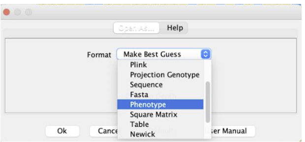
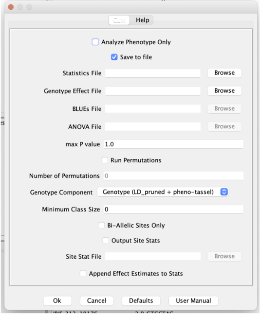
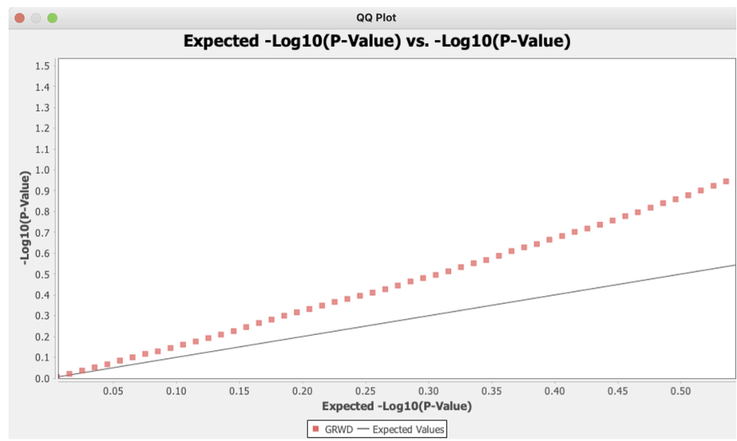

Genome-wide Association Studies (GWAS)
Goal
In this module, you'll learn the basics of analyzing Genome-Wide Association Studies (GWAS) data. We'll start by looking at the fundamentals of GWAS and understanding the data they produce. Then, we'll examine how to identify genetic variants associated with traits or diseases in a population. We'll also cover how to ensure the quality of our data, filter out any errors, and perform statistical analyses to interpret what our GWAS data is revealing about genetic associations.
Introduction to GWAS
Fundamental concepts of GWAS
Genome-Wide Association Studies (GWAS) are methods used to identify genetic variants associated with a trait of interest by scanning markers across large sets of individual genomes, to determine if any genetic variations are associated with a specific disease or trait.
Overall GWAS procedure:
- Select the GWAS panel - a collection of accessions that can be thought of as a sample from a population (or represent diverse gene pool)
- Genotype or sequence all the accessions in the panel
- Phenotype the accessions for a trait (or traits) of interest
- Run the association analysis following one of GWAS approaches.
Goal
Our goal is to understand the relationship between genotype and phenotype.
Phenotype can most generally be modeled as:
Pheno=ùëì(Geno)+ùëí
where ùëí represents the noise or error from non-genetic factors. To proceed anywhere, we need to make some simplifying assumptions.
Common Assumptions
Very often, one of the following assumptions is made:
- The trait is influenced by a few variants with significant effects, or
- The trait is influenced by many variants, each with a small effect.
\(Y = \mu + SNP_1 * b_1 + SNP_2 * b_2 + ... + SNP_M * b_M \)
where Y is the phenotype, \(\mu \) is the phenotype mean, M is the number of SNPs (or any genetic markers) in the model, \( SNP_1, ..., SNP_M \) are encoded genotype values for each SNP (more on this later, in the simplest case these are 0-1 variables), and b_1 to b_M are corresponding SNP effects.
Issues with simple linear models
The trouble with the model above is that in a typical situation the number of samples is much less than the number of SNPs.
This implies that the model lacks a unique solution, making SNP effects indeterminable.
There are several ways out of this. The most typical way is trying to test a single SNP at a time, scanning all the SNPs in the genome in turn.
Single-SNP GWAS
The typical procedure is to test each SNP for association with the phenotype:
- Detects considerable effects on the trait.
- Focuses on identifying regions affecting the phenotype rather than creating a comprehensive model.
- Relies on linkage disequilibrium (LD) to capture variants not in the dataset.
Models for Genotype-Phenotype Association
- Single-SNP: Testing each SNP individually.
This is the most typical approach. - Multiple SNP: Using multiple SNPs simultaneously.
Several methods have been developed (e.g. FarmCPU, BLINK etc) that produce a multiple-SNP final model. - Whole-genome: Incorporating all SNPs.
As we noted above, such a problem does not have a solution within the ordinary linear regression model (ordinary least squares). However, there are many penalized regression methods that allow more variables than observations and are applied to GWAS datasets.
Testing for association in a single-marker GWAS
How do we test association between phenotype and genotype (single SNP)? There are many statistical tests developed for testing association or non-independence. First, let us understand what variables we are dealing with.
Async task: read about core concepts like ploidy, zygosity, allele.
Single-Nucleotide Polymorphisms (SNPs)
Let us recall that a Single-Nucleotide Polymorphism (SNP) is a genetic variant arising as a mutation of one base (A,C,G,T) at a certain position in the genome into another base. For example, there could have been a mutation on Chromosome 1 at position 1278 that changed G to A. Both the original base and the new base are alleles of the SNP. The original base is the ancestral allele, and the new base is the derived allele of the SNP.
In diploid species, a biallelic SNP genotype across a sample of 400 individuals can look like this
| Sample | Genotype |
|---|---|
| Sample1 | A/A |
| Sample2 | G/G |
| Sample3 | A/G |
| ... | ... |
| Sample400 | A/A |
Most of the SNPs are biallelic (have only two alleles). In this course we deal with diploid species only (rice). There are wild relatives of rice that are tetraploid, and the theory would be slightly different for those species.
A biallelic SNP genotype could be thought of as a categorical variable with 3 levels:
- homozygous reference
- heterozygous
- homozygous alternate allele
| Sample | Genotype | Encoded genotype |
|---|---|---|
| Sample1 | A/A | 2 |
| Sample2 | G/G | 0 |
| Sample3 | A/G | 1 |
| ... | ... | ... |
| Sample400 | A/A | 2 |
On the phenotype side, there are different types of phenotypes. Some are quantitative (plant height, cm; weight, g; days to flowering); Some are categorical: resistant vs susceptible, tolerant vs intolerant; seed color can be white, red, or purple.
Depending on how we model both phenotype and genotype, we can select various association tests. There are
- e.g. for binary traits we can employ: a chi-squared test or use logistic regression.
- For continuous traits: t-test, linear regression.
For a biallelic SNP genotype (AA, Aa, aa), the encoding is 0, 1, 2 based on the number of minor alleles.
GWAS Data Preparation
In order to understand the principles behind the data preparation best practices, we need to understand how the genotype datasets are created.
Dense Genotype Datasets
Diversity panels genotyped with whole-genome sequencing often exhibit:
- A large number of SNPs, many of which are rare.
- Extensive LD between SNPs, influenced by evolutionary patterns such as bottlenecks, selection, and population stratification.
SNP Filtering
- Minor Allele Frequency (MAF) thresholds are typically set at
- maf > 0.05 for n=300 and below
- maf > 0.01 for n >1000 and above
- one may exercise some freedom here
- Missing Data: High missing call rates reduce reliability; imputation may be used cautiously.
- Hardy-Weinberg Equilibrium (HWE): Adjustments are necessary for inbred or partially selfing species.
Phenotype Data Preparation
- Adjust raw phenotype data, identify and handle outliers.
- Ensure phenotype normality for standard modeling assumptions, though models with covariates do not require normality of the phenotype itself.
Linkage Disequilibrium (LD) in GWAS
LD allows for the detection of non genotyped variants and influences the association signals:
- Strong LD leads to wider association peaks and can obscure causal variants.
- Imputation methods can leverage LD to infer missing genotypes or untyped variants.
Peak Analysis
- Analyzing haplotype groupings in regions with significant association peaks to understand the underlying genetic architecture.
Loading Data
For GWAS analysis you need, at a minimum, the following types of inputs:
Inputs:
- A genotype file in PED/MAP, VCF, or HapMap format
- A phenotype file formatted for TASSEL
For this exercise, we will use the following files:
- Genotype in PLINK (PED/MAP) format:
- LD_pruned.PEDMAP.zip contains both LD_pruned.ped and LD_pruned.map files
- LD_pruned.ped
- LD_pruned.map
- Phenotype file:
SNP Data
Loading SNP data allows you to visualize and explore genetic variations across your samples. Understanding these variations is fundamental to identifying associations between genetic markers and traits of interest.
- In the top menu, click File -> Open As and select Plink.
- Select the PED and MAP files (LDpruned.ped and LDpruned.map)
- Upon successful loading, a new dataset will appear in the "Sequence" folder.
Loaded SNP data
- Once the genotype (SNP) data is loaded, you will see a summary of the dataset on the left side, which looks as follows:
- The graphical genotype view will show a portion of your genotype data.
- Homozygous REFerence : yellow
- Heterozygous: dark green
- Homozygous ALTernate: blue
- Missing call (N): white
You may scroll up and down to change the visible samples, and use the slider to change the genomic region. The dropdown currently showing "MajorMinorAllele" shows the coloring scheme. The default scheme shown here colors the genotype calls as follows:
Load Phenotype
TASSEL supports loading phenotype files in specific format (see above). The file may contain several traits, making it easier to run GWAS on multiple traits.
- File -> Open As -> Phenotype (scroll the options list down) 
- Choose a phenotype file. Upon loading, the data panel will look like
BASIC GWAS
Join Genotype and Phenotype:
This step ensures matching of samples between phenotype and genotype datasets.
- Select both genotype and phenotype files.
- Click Data -> Intersect Join
- Select the intersect dataset (geno+pheno).
- Click Analysis -> Association -> GLM.
- Leave the default choices and proceed.
Finding Results Table

Note on file saving
- In the GLM setup screen, you may check the "Save to file" checkbox and choose the output file location. Note that there are two output tables: Statistics file (this will contain p-values) and Effects file (this will hold estimated SNP effects).
- Alternatively, after the computation finished within TASSEL, use File-> Save as. 
Notable columns:
-
p, add_p, dom_p (p-values of the three genotype models)
- add_p holds the p-value from the most common genotype association model (additive)
- dom_p: dominance model (both heterozygous and HOM ALT calls assumed to have the same effect).
- marker R squared
- This is a common population-weighted measure of SNP effect. It generally does not replicate across different populations.
- minorObs
- Note the frequencies of these SNPs (last column: # minor Obs) and marker R2
- Don't forget this is a basic model that completely ignores population structure. Before digging deep into the table, let's visualize results and do a simple QC using a Q-Q plot.
Log10 scaling of p-values
Smaller P values are more significant, and we care about the smallest rather than those around 1.It is difficult to compare small values directly, and we need to use a transformation.
In GWAS a standard transformation is –log10(p) : minus base 10 logarithm of p-value
This is often called "Phred scaling".
Visualizing Results
Manhattan Plot:
- X-axis: Physical position
- Y-axis: log10-scaled P-value
- Zooming: Use brush select

- Zoom in using brush
- Hover to see the info
- Right-click on a plot to access Properties menu
Assessing Statistical Validity of GWAS
Q-Q Plot
- (Quantile-Quantile Plot)
- Expected vs Observed -log10 (pvalues)
- To see if non-significant p-values are distributed as expected
- checking validity of the null model
- To see if most significant p-values are indeed significant
- Only makes sense if the 1st is true
Creating Q-Q Plot:
- Results -> QQ plot
- QQ plot options: just use the default
- To inspect irregularities more carefully, you may increase number of points later
- This affects density of points, rendering time, and file size
QQ plot – basic GLM
- Each point is a SNP
- Y coordinate is –log10(p-value)
- X coordinates are "expected" -log10(p-values),
- "theoretical quantiles"
- Model QC:
- Note that points go above diagonal right at the beginning (0,0), almost no points seem to be near diagonal. Thus, the assumption that most SNPs have no effect + null model are wrong.

- Zoom in by "brushing"
- Zoom in near 0
- More clearly see deviation from the diagonal
- Properties of log10 scaling:
- The interval from 0 to 1 on x- axis contains SNPs with expected p-values from 1 to 0.1 -I.e. 90% of SNPs
- From 0 to 0.301 - half of all SNPs
- The deviation from diagonal at the median point is related to the technique called "Genomic control"
- With no subsetting of points
- Properties of log10 scaling:
- The interval from 0 to 1 on x- axis contains SNPs with expected p-values from 1 to 0.1 -I.e. 90% of SNPs
- From 0 to 0.301 - half of all SNPs ( 10^(-0.301) = ? )
Module Summary
Deciphering the genetic foundation of complex traits through Genome-Wide Association Studies (GWAS) is a pivotal aspect of modern genetics. By scanning the genome for Single Nucleotide Polymorphisms (SNPs) that are associated with particular traits, researchers can identify genetic variations that influence these traits. This process is essential for discovering specific genes linked to traits, enabling significant progress in gene discovery and plant breeding.
In this module, you have developed a comprehensive understanding of Genome-Wide Association Studies (GWAS). You have learned the fundamental concepts behind GWAS and explored how to identify genetic associations with complex traits. Additionally, you have gained hands-on experience with essential GWAS tools, such as TASSEL, enabling you to analyze and interpret genetic data effectively.
- Genome-wide Association Studies discovers the connections between a trait or phenotype and the genotype following the concept of P = G + E + (GxE).
- Familiarity with the input files such as the SNP data and phenotype data and tools such as TASSEL is necessary to perform GWAS
- It is imperative to understand the concept of p-values, manhattan plot and QQ plot to analyze and draw conclusions from the results of GWAS